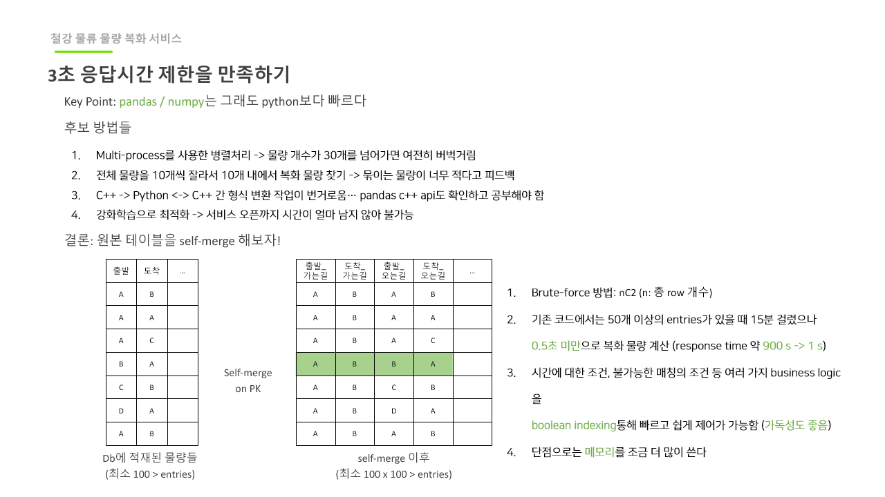

핵심 메시지
예측 + 규칙 + 운영 API를 한 번에 결합해 수동 조율 의존도를 낮췄습니다.
Supporting Case
제품별 배차 가능 차량을 예측한 뒤, 영업소별 요구사항은 Scorer/Score Matrix로 추상화해 운영 가능한 배차 정책 백엔드로 정리한 사례입니다.
예측 + 규칙 + 운영 API를 한 번에 결합해 수동 조율 의존도를 낮췄습니다.
2024.02 ~ 2024.11
멀티클래스 예측 파이프라인 적용, score matrix 설계, 배포/모니터링 고도화
Python, FastAPI, pandas, Redis, GitLab CI/CD, Prometheus/Grafana
사용률 20% → 80%, 일부 영업소 97%까지 개선 및 SLA 안정화
각 영업소는 차량, 제품, 마감 시간 규칙이 다르게 동작해 모든 로직을 하드코딩으로 처리하기 어려웠습니다. 모델 예측값만으로는 현장 규칙 반영이 충분하지 않아, 운영자가 해석 가능한 점수 체계가 필요했습니다.

이 그림에서 봐야 할 점
이 그림에서 봐야 할 점
| 증상 | 원인 | 조치 | 결과 |
|---|---|---|---|
| 영업소 규칙 반영이 느림 | 정책 분기와 모델 API가 묶여 있음 | Scorer를 별도 레이어로 분리하고 배포 경로 고정 | 규칙 변경 리드타임이 단축 |
| 후보 계산이 동일하게 안 나옴 | 데이터 정합성 체크가 부족 | data contract 점검을 예측·점수 계산 사이에 추가 | 재현성 있는 디버깅이 가능해짐 |
| 모니터링 공백 | 성능 지표가 API 단계에서 끊김 | score matrix 전후 KPI를 동일 trace로 수집 | 장애 탐지와 회귀 대응 속도 향상 |
요건별 배차 처리율이 개선되며, 전체 사용률이 20%에서 80~97%로 상향
영업소 특화 규칙을 score matrix로 분리해 코드 변경 범위를 축소
예측, 규칙, 응답 단계까지 추적 가능한 로그 체계를 확보
ML 점수의 정확도만으로는 충분하지 않고 운영 해석성이 병행되어야 합니다.
데이터 계약을 앞서 정하면 정책/학습/출력 단계에서 오류 전파가 줄어듭니다.
모델 점수와 규칙을 한 레이어에서 묶으면 응답 품질과 성능 조정이 쉬워집니다.